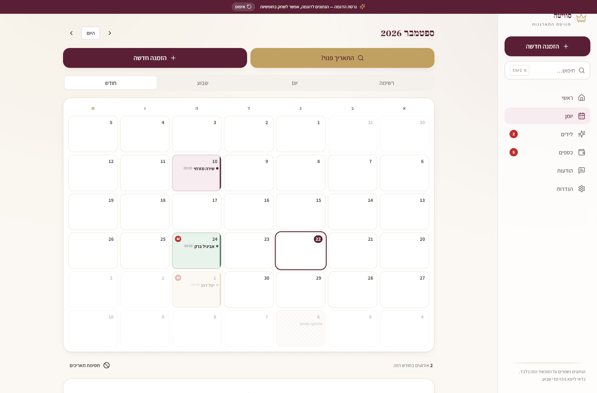
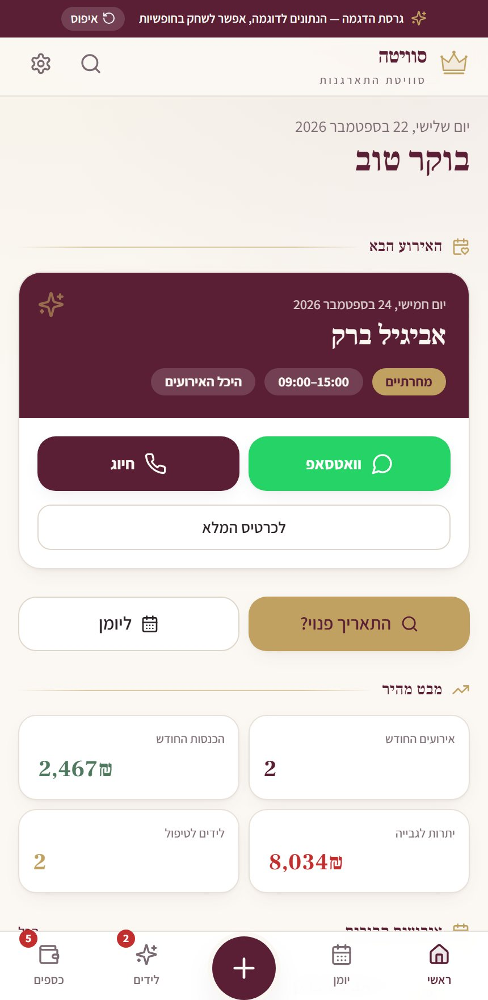
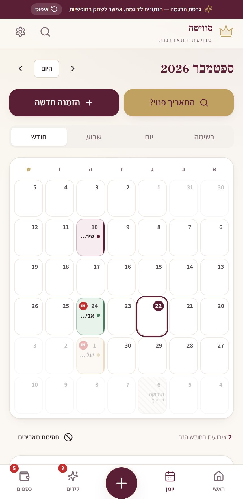
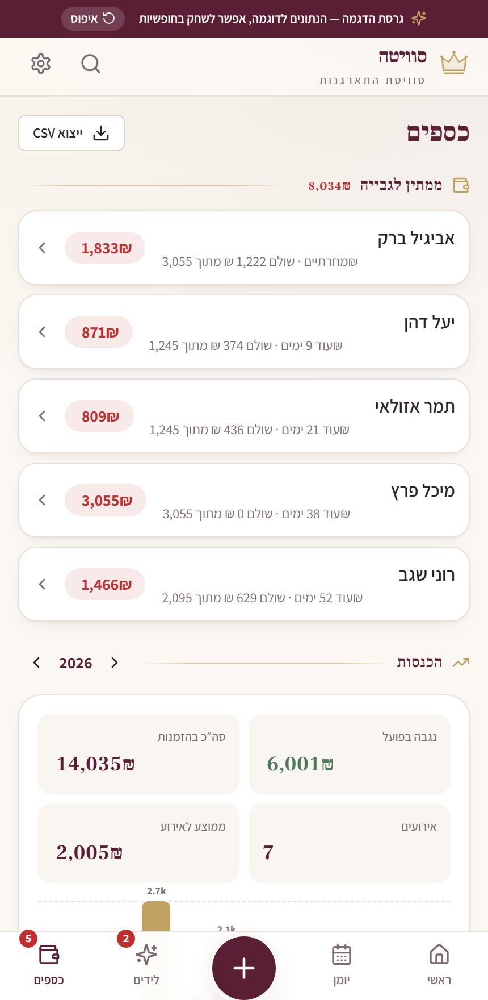
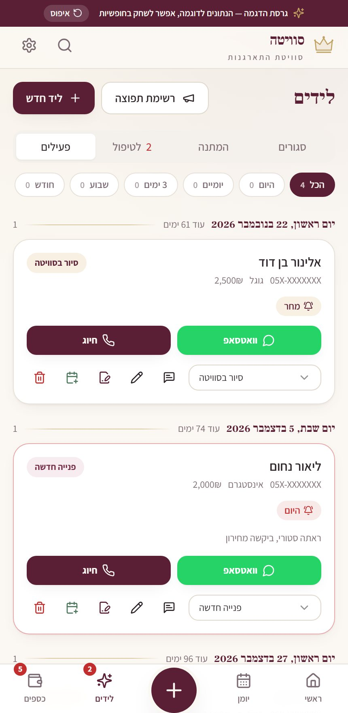
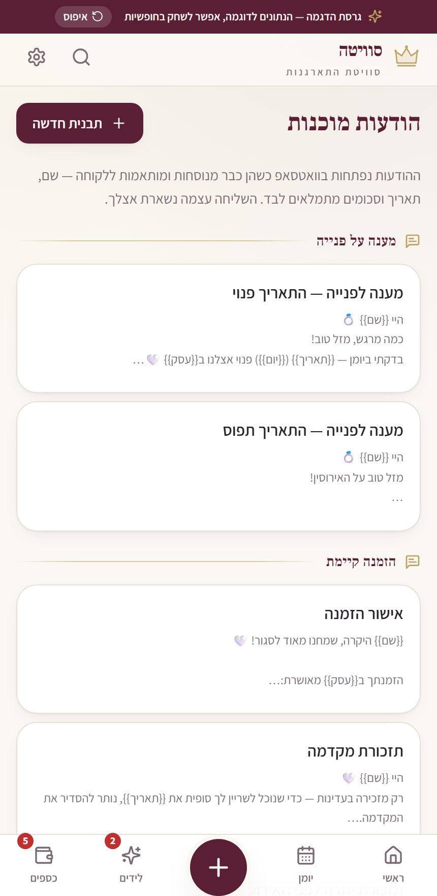

הסוויטה שלך,
מנוהלת מהטלפון
יומן, כלות, מקדמות, יתרות, לידים והסכמים — במקום אחד, בעברית, ומותאם לעבודה מהנייד. גם באולם בלי קליטה.
- עובד גם אופליין
- חתימת הסכם מהטלפון
- מקדמות ויתרות במעקב

יומן במחברת ומקדמות בוואטסאפ — עד שמשהו נופל
כלה שואלת אם תאריך פנוי, והתשובה תלויה בגלילה בהיסטוריית הודעות. מקדמה שולמה — אבל למי ומתי? ההסכם נשלח כתמונה וחזר לא חתום. וכשכלה מתקשרת שבוע לפני, צריך לחפש את כל הפרטים מחדש. המערכת הזאת נבנתה בשביל בדיוק הרגעים האלה: הכל על כלה אחת, במסך אחד.
מפנייה ראשונה עד אחרי האירוע
פנייה נכנסת
הכלה שואלת על תאריך. בודקים זמינות בשנייה, ומקבלים תשובת וואטסאפ מוכנה לשליחה — כולל תאריכים חלופיים אם תפוס.
סוגרים ומגבים בהסכם
פותחים כרטיס כלה, רושמים מקדמה, ושולחים הסכם לחתימה. היא חותמת באצבע מהטלפון, והעותק החתום נשמר בכרטיס.
מגיעים ליום האירוע מוכנים
ציר זמן ליום, יתרה לגבייה מסומנת, וכל הפרטים בהישג יד — גם כשאין קליטה.
ככה זה נראה ביום-יום
המסכים כאן הם מגרסת ההדגמה של המערכת, עם נתונים לדוגמה.





כל מה שהיה פזור — במקום אחד
יומן מלא
חודש, שבוע, יום ורשימה. צבע לפי סטטוס, סימון ₪ ליתרה פתוחה, וחסימת תאריכים.
בדיקת זמינות
תאריך → פנוי / תפוס / חסום, עם הצעת תאריכים חלופיים ותשובת וואטסאפ מוכנה.
כרטיס כלה
כל הפרטים במסך אחד, כפתורי וואטסאפ וחיוג גדולים, ציר זמן ליום האירוע וייצוא ליומן.
מקדמות ויתרות
אמצעי תשלום, פס התקדמות, "ממתין לגבייה", דוח הכנסות שנתי וייצוא לאקסל.
לידים
פייפליין לפי שלבים, תזכורות פולואפ, והמרה להזמנה בלחיצה אחת.
חתימת הסכם
ההסכם נשלח בוואטסאפ, הכלה חותמת באצבע מהטלפון, והעותק החתום חוזר לכרטיס.
תבניות וואטסאפ
הודעות בעברית עם משתנים (שם, תאריך, יתרה) שמתמלאים אוטומטית לפני השליחה.
עובד אופליין
מותקנת על הטלפון כאפליקציה, ועובדת גם באולם בלי קליטה. גיבוי בלחיצה.
בוחרים כמה רחוק לקחת את זה
תשלום חד-פעמי, בלי מנוי חודשי. ההתאמה לתחום שלך כלולה במחיר.
יומן חכם
הבסיס — הכל על מכשיר אחד
2,500 ₪
תשלום חד-פעמי · בלי עלות חודשית
- יומן חודש / שבוע / יום / רשימה
- בדיקת זמינות + תשובת וואטסאפ מוכנה
- כרטיס כלה עם כל הפרטים
- מקדמות, יתרות ומה ממתין לגבייה
- התקנה לטלפון ועבודה אופליין
- ייצוא גיבוי בלחיצה
סוויטה מנוהלת
3,500 ₪
תשלום חד-פעמי · בלי עלות חודשית
- כל מה שביומן חכם
- לידים עם שלבי טיפול ותזכורות
- תבניות וואטסאפ מותאמות לעסק שלך
- חתימת הסכם מהטלפון של הכלה
- דוח הכנסות שנתי + ייצוא לאקסל
- התאמת שדות, שירותים ומחירים
סוויטה בצמיחה
כמה מכשירים, כמה עובדות
5,000 ₪
חד-פעמי · אחסון הענן לפי היקף השימוש
- כל מה שבסוויטה מנוהלת
- גרסת ענן עם סנכרון בין מכשירים
- גישה לעובדת נוספת
- גיבוי אוטומטי בענן
- מיתוג הסוויטה שלך במערכת
- ליווי והדרכה אישית
מה שחשוב לדעת מראש
המערכת שולחת הודעות ללקוחות לבד?
איך הכלה חותמת על ההסכם?
איפה הנתונים נשמרים?
זה עובד בלי אינטרנט?
אני לא סוויטת התארגנות — זה מתאים לי?
אפשר לראות אותה לפני שמחליטים?
רוצה לראות את זה על העסק שלך?
ספרי לי איך את מנהלת את היומן והתשלומים היום — ואגיד לך בכנות מה ישתפר, וכמה זה עולה.